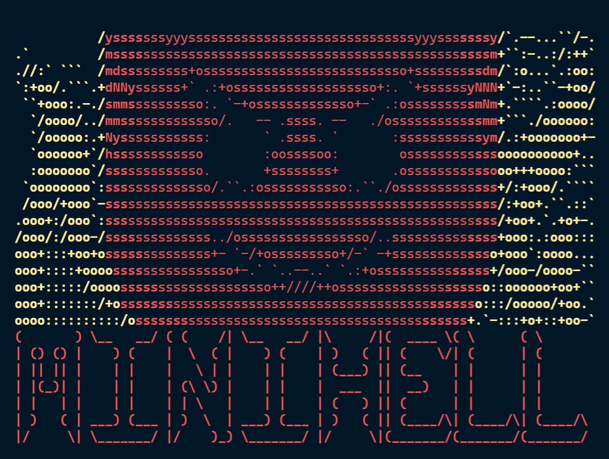
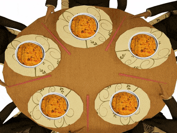

Background
Experienced in low-level C/C++ architecture development, hardware diagnostics, and Unix systems programming. Currently focused on containerized environments, automation scripts, and full-stack web applications.
Software Engineer & Automation Specialist
I build robust software architectures and automation tools that remove technical bottlenecks, improve system stability, and keep operations efficient.
About
Experienced in low-level C/C++ architecture development, hardware diagnostics, and Unix systems programming. Currently focused on containerized environments, automation scripts, and full-stack web applications.
Name: Marouane Laamiri
Role: Software Engineer
Location: Morocco
Projects
Virtualized a secure infrastructure stack with Docker Compose, Nginx, WordPress, MariaDB, custom Dockerfiles, persistent volumes, and internal container networking.
View DocumentationBuilt a real-time web application with secure authentication, live data updates, WebSocket communication, database-backed state, and responsive SPA behavior.

Engineered a POSIX-style shell in C with lexer/parser logic, process pipelines, file descriptor management, environment handling, redirection, and signal control.
View Documentation
Solved thread synchronization challenges with mutexes, precise timing, shared resource protection, and monitoring logic designed to avoid deadlocks and data races.
View Documentation
Built a custom raycasting engine with manual geometry, map parsing, texture mapping, collision detection, and rendering optimized for smooth real-time movement.
View DocumentationContact